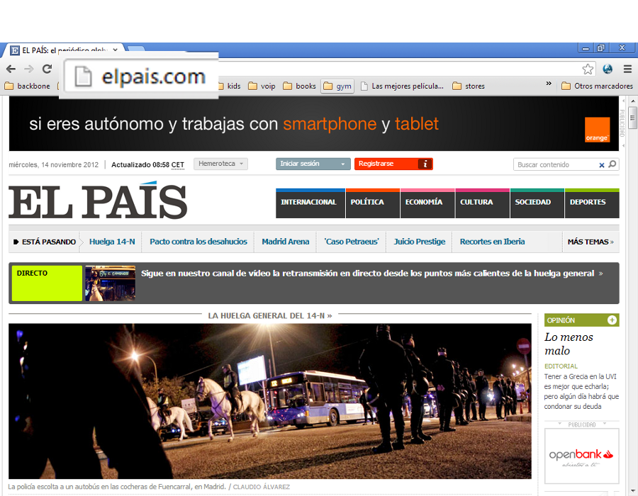
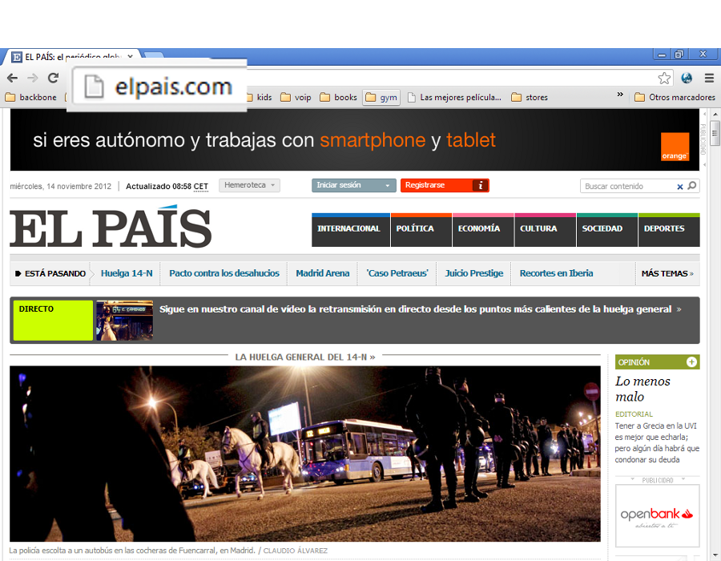
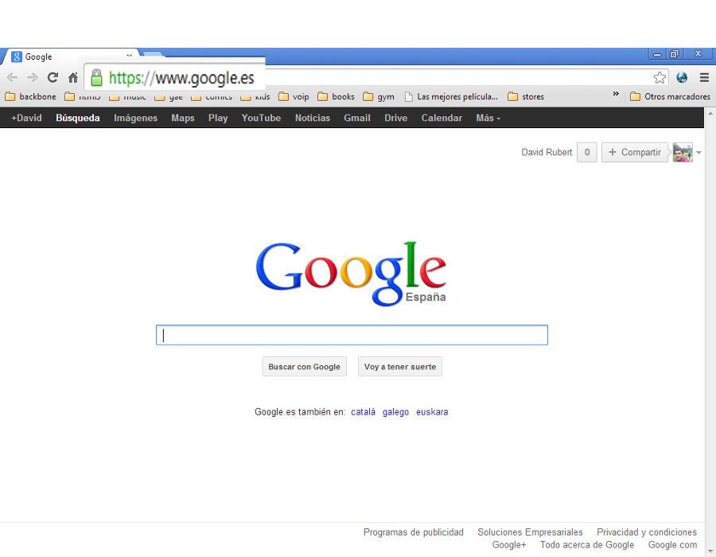
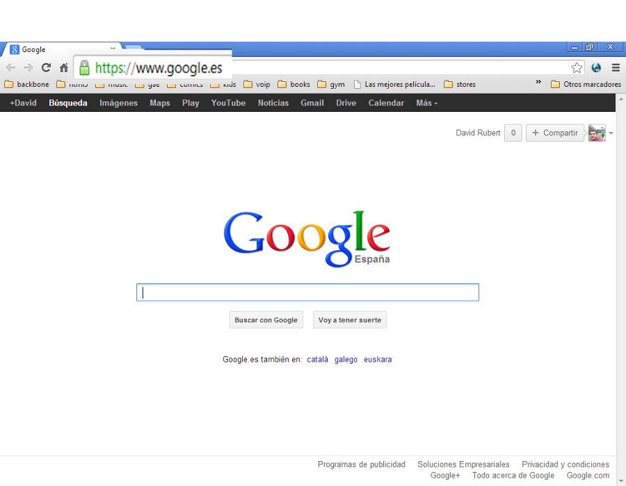
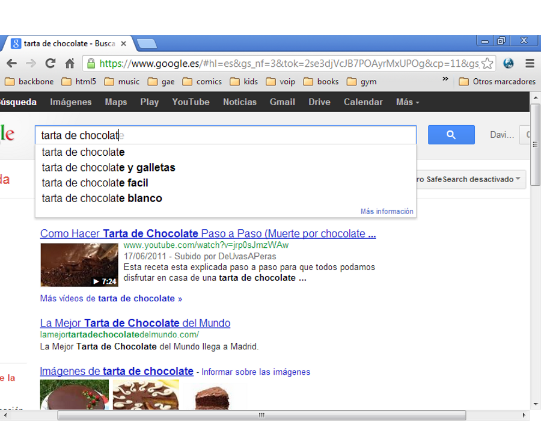
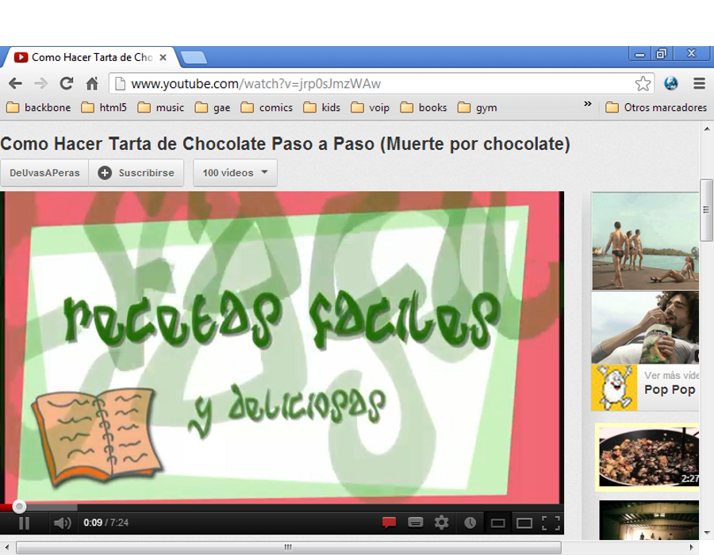
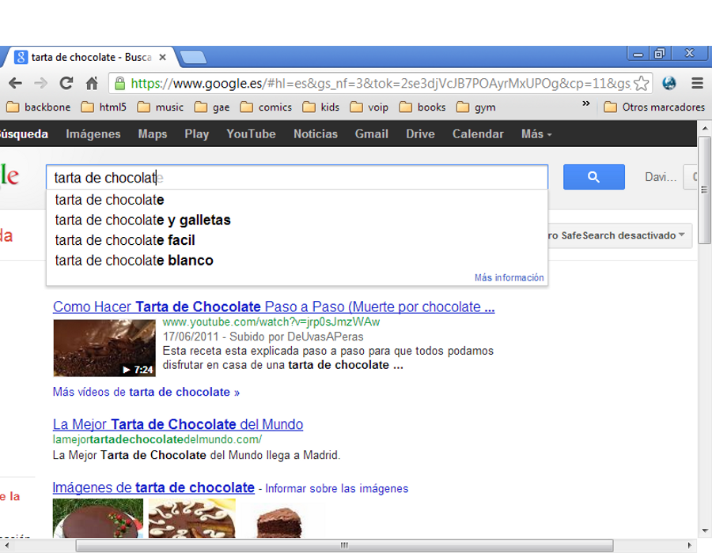
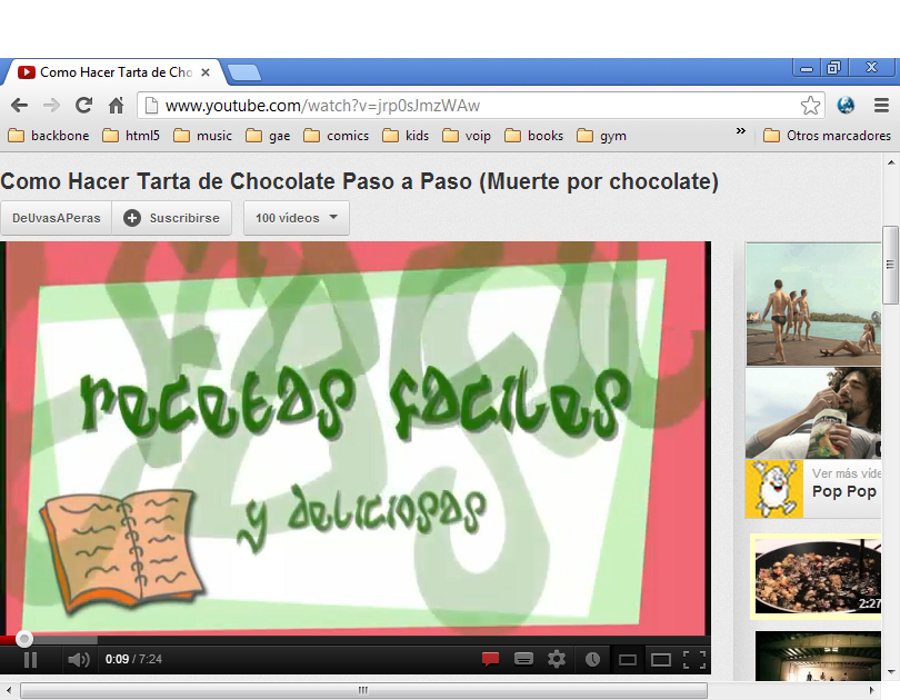

Iniciación a la informática e Internet
El navegador
Apreta la tecla → para avanzar.


Un navegador o navegador web (del inglés, web browser) es un programa que permite ver la información que contiene una página web (ya se encuentre ésta alojada en un servidor dentro de la World Wide Web o en un servidor local).


Hoy veremos algunas de las características principales de un navegador web, que podemos resumir en lo siguiente:


Cambia de foto con las teclas: ↑ y ↓

Es indiferente, ya que los tres tienes una funcionalidad similar. Además que es conveniente aprender a manejar más de uno. En cualquier caso, os doy mi recomendación:
Decir que Internet Explorer lo tendréis instalado en cualquier ordenador Windows, mientras que los otros dos navegadores deben instalarse previamente.


Cambia de foto con las teclas: ↑ y ↓

Hagamos un recordatorio de lo que hemos visto en las dos sesiones anteriores al respecto de las direcciones web.
Veamos algunos ejemplos de direcciones web.
Cambia de foto con las teclas: ↑ y ↓
La URL (Uniform Resource Locator) es la manera que tenemos de acceder a los contenidos de la web.
 

 

Cambia de foto con las teclas: ↑ y ↓

Hace unos años encontrar contenidos en la web era complicado, ya que necesitábamos conocer uno o varios enlaces de los que partir para encontrar la información que buscábamos. Hoy en día es más fácil gracias a los motores de búsqueda.
 



Cambia de foto con las teclas: ↑ y ↓